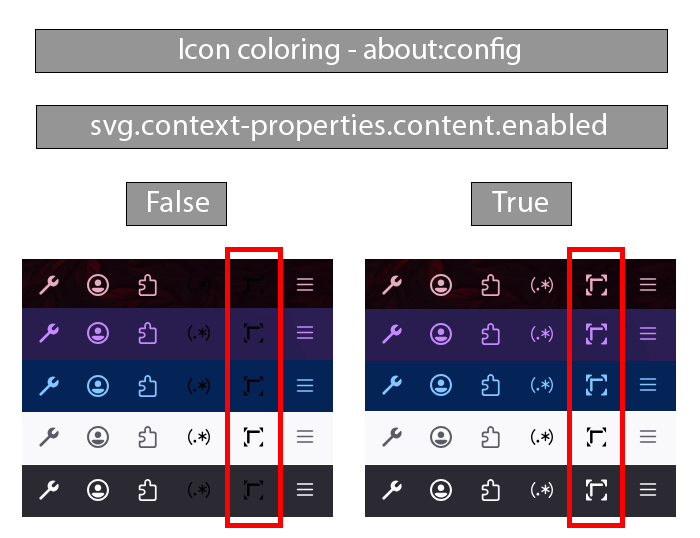

To allow the add-on icon to adapt to your Firefox theme exactly (matching the toolbar text color), you need to enable a specific preference in Firefox.
By default, Firefox treats extension icons as static images. Enabling this setting allows the browser to pass theme data (like text color) to the icon via context-fill. This ensures the icon stays perfectly visible regardless of whether you use a light, dark, or colorful theme.
Please follow these steps:

Note: If you do not enable this setting, the add-on icon will remain black regardless of your theme. It will not support being able to have a light or dark version.